Функционалността за масово преразпределение (един към друг съдия -докладчик) се използва за последващо преразпределение на множество дела в една група за случайно разпределение от един съдия на друг съдия. При разпределение броят получени съдебни дела се отчита в съответната съдебната група за разпределение чрез премахване на броя преразпределени дела от досегашния съдия и натрупване на брой дела на новия съдия. На текущия съдия се добавя един брой среднодневни дела, а на новия минус 1 един брой среднодневни дела. По този начин не са променя общия брой дела в групата за случайно разпределение нито на текущия, нито на новия съдия и това не се отразява на алгоритъма за случайно разпределение, т.е. този брой дела не се отчита от алгоритъма и не оказва влияние при последващо ново случайно разпределение през стандартния режим за автоматично случайно разпределение.
Забележка: Ако текущият съдия -докладчик има разпределени дела чрез режим по дежурство, броят на делата, които се премахват от общия брой разпределени дела в групата на този съдия включва само разпределените чрез автоматичен и ръжен режим на разпределение, а броят дела, които се добавят на новия съдия - докладчик включва всички дела, които му се преразпределят (включително и тези, които са били първоначално разпределени по дежурство).
Функционалността за масово последващо преразпределение се използва за преразпределение на свършени дела за администриране, при прехвърляне масово на дела от младши съдии на нови младши съдии и др. според необходимостта обоснована в акт на административния ръководител на съда (заповед или вътрешни правила), който е необходимо задължително да бъде посочен като основание при преразпределение.
Този начин за преразпределение е приложим само за:
- Тип на разпределение – избор на съдия-докладчик;
- Начин на разпределение – ръчно.
Екранът за масово преразпределение се достъпва през меню Съдебни дела -> Управление на дела -> Масово преразпределение на съдия-докладчик.
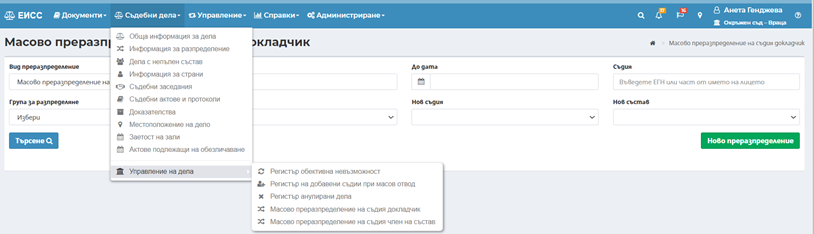
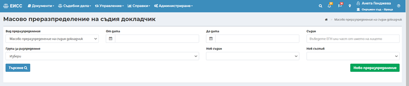
Извършване на ново преразпределение става посредством избор на бутон в дясната част на екрана. Зарежда се нов екран за въвеждане на критерии за търсене на дела, които ще се преразпределят.
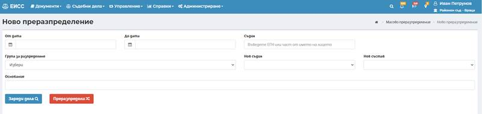
- От дата – начална дата за период, в който са образувани делата;
- До дата – крайна дата за период, в който са образувани делата;
- Съдия – текущ съдия по делата. Полето е с функция за автоматично въвеждане на имена по минимум три символа;
- Група за разпределение – съдебна група за разпределение, в която са делата. Избор от списък;
- Нов съдия – нов съдия, на когото да се преразпределят делата. Избор от списък на съдии, които са добавени в съдебната група за преразпределение.
- Нов състав – възможност за избор на състав при смяна на състава по делата. Заредената стойност по подразбиране в полето е „Без промяна на състава по делото“, чрез която се запазва състава, в който е разглеждано делото до момента на преразпределение.
- Основание – задължително поле, в което се въвежда основание за извършване на масово преразпределение на дела. Текстът, въведен в полето се извежда в протокол от преразпределение.
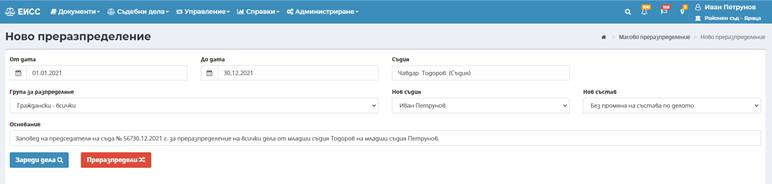
След избор на бутон се зареждат всички дела, в статус различен от анулирано, които са на съдия-докладчик избра в поле Съдия.
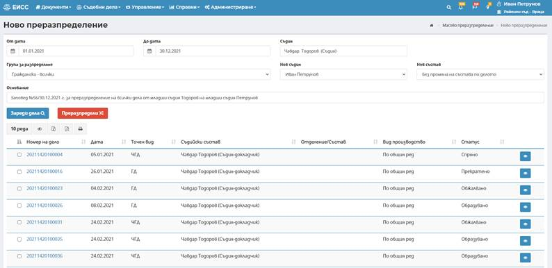
С маркиране на чек-бокса пред номера на всяко дело, което трябва да бъде преразпределено се избират делата, които ще бъдат преразпределени.
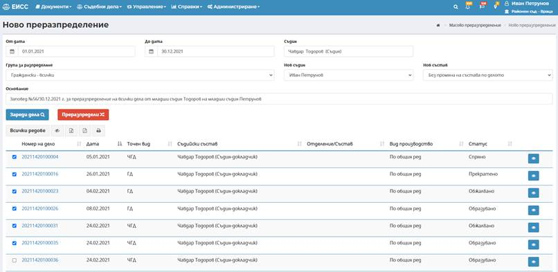
Забележка: Максималният брой дела за преразпределение е 20 дела.
След маркиране на необходимите дела, потребителят избира бутон . След успешно преразпределение се зарежда протокол от масово преразпределение за всички избрани дела.
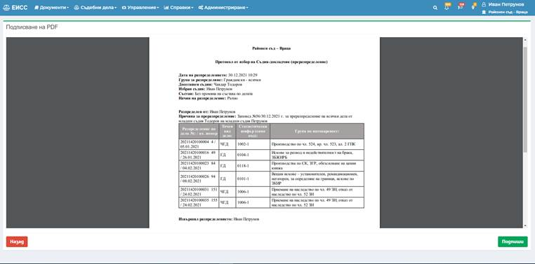
Разпределящият потребител избира бутон в долния десен ъгъл на екрана, за да подпише с КЕП генерирания протокол. Зарежда се екран за избор на сертификат.
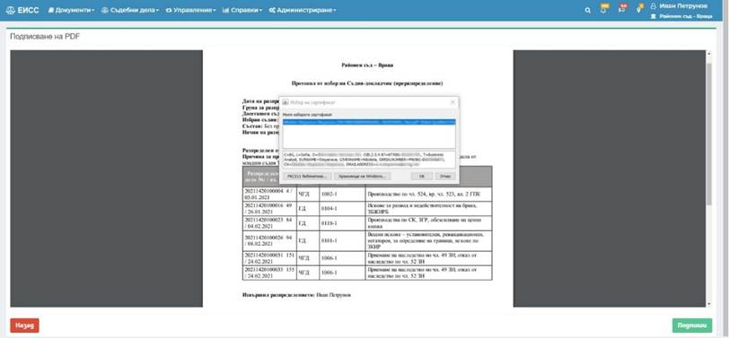
След избор на сертификат, с който да бъде подписан протокола, се избира бутон OK и се въвежда ПИН на КЕП. Визуализира се следния екран:
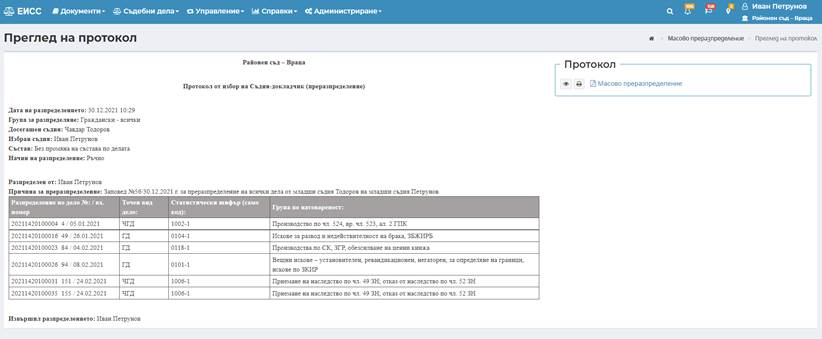
С активните бутон до електронния документ има възможност за преглед с бутон или директен печат с бутон на електронно подписания файл.
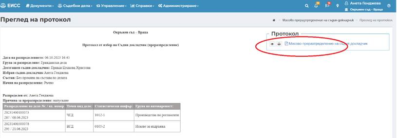
С преразпределението автоматично съдията-докладчик по избраното дело се извежда и на негово място по делото се отразява избрания нов съдия-докладчик. Причина за извеждане на досегашния съдия е от тип Преразпределение.
В информация за преразпределение за предходния съдия-докладчик се извежда информация за тип – преразпределение и мотив – информация въведена при масовото преразпределение в поле „Основание за масово преразпределение“.
Протоколът от случайно разпределение се добавя в ел. папки на всички дела, за които е направено преразпределение.
Протоколът се публикува и в публичния портал за протоколи от случайно разпределение.
Ако п реди подписване или по време на подписван, потребителят прекъсне работа със системата или възникне грешка при изчитане на смарт картата на КЕП, има възможност чрез търсене на преразпределение (изпълняват с стъпките в 8.11.4.3), потребителят избира бутон и преминава към стъпките за подписване на протокол, описани по-горе.
Ако по време на запис на преразпределението, възникне грешка при запис, потребителят има възможност чрез търсене на преразпределение (изпълняват с стъпките в 8.11.4.3), да повтори записа на преразпределението. В екрана с данните за преразпределението се извежда следното съобщение:
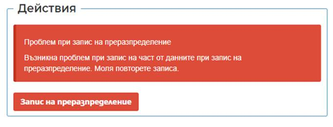
Чрез избор на бутон потребителят преминава към стъпките за презаписване на преразпредението.
При наличие на извършени предходни преразпределения те се извеждат в списък в табличен вид.
Възможните филтри за търсене на предходно масово преразпределение са:
- Вид преразпределение – възможност за избор на „масово преразпределение“.
- От дата – начална дата на период, в който е извършено преразпределение;
- До дата – крайна дата на период, в който е извършено преразпределение;
- Съдия – предходен съдия по делата. Полето е с функция за автоматично въвеждане на имена по минимум три символа;
- Група за разпределение – съдебна група за разпределение, в която са били преразпределените дела към момента на преразпределение. Избор от списък;
- Нов съдия – нов съдия, на когото са преразпределени делата. Избор от списък на съдии, които са налични в съдебната група за преразпределение.
- Нов състав – възможност за избор на състав при смяна на състава по делата. Заредената стойност по подразбиране в полето е „Без промяна на състава по делото“, чрез която се запазва състава, в който е разглеждано делото до момента на преразпределение.
След избор на необходимите филтри се избира бутон , с което се филтрират търсените резултати.
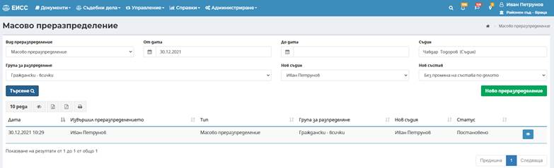
С бутон има възможност да се прегледа генерирания протокол и преразпределените дела със съответното преразпределение.
Екранът за масово преразпределение на съдия-член на състав се достъпва през меню Съдебни дела -> Управление на дела -> Масово преразпределение на съдия-член на състав.
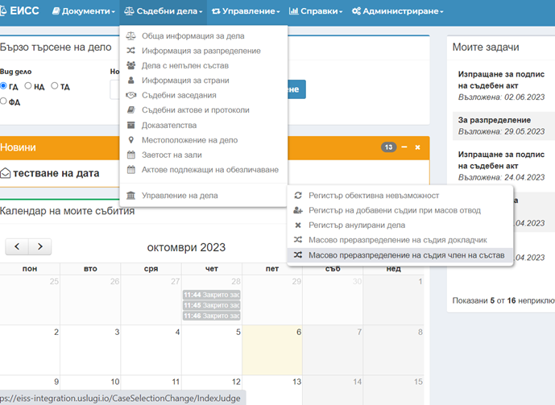
Менюто е достъпно за потребител с роля Разпределение и Супервайзор в комбинация или само Администратор и екранът изглежда по следния начин:
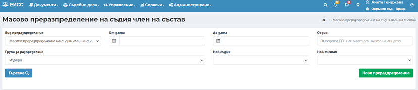
Извършване на ново преразпределение става посредством избор на бутон в дясната част на екрана. Зарежда се нов екран за въвеждане на критерии за търсене на дела, които ще се преразпределят.
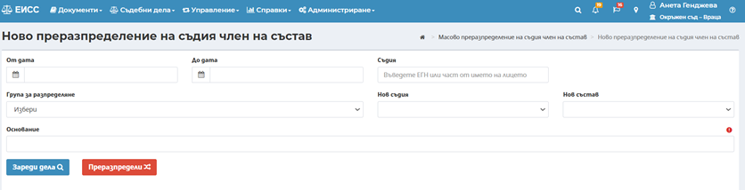
- От дата;
- До дата;
- Съдия – въвеждат се имената на текущ съдия-член на състав. Полето е с функция за автоматично въвеждане на имена по минимум три символа;
- Група за разпределение – посредством падащо меню се избора конкретната съдебна група за разпределение;
- Нов – въвеждат се имената на новия съдия-член на състав, на когото да се преразпределят делата. Избор на съдия, предварително добавен в съдебния състав от структурата на съда.
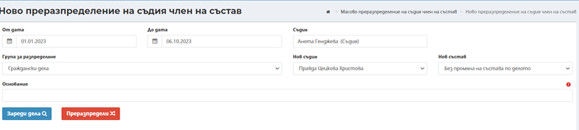
След въвеждане на горепосочените критерии за търсене на дела се избира бутон и се зареждат всички дела, в статус различен от анулирано, които са на текущия съдия-член на състав избран в поле „Съдия“.
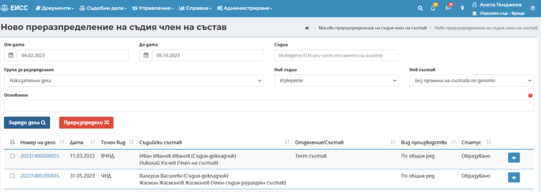
Делата, които трябва да бъдат преразпределени се избират чрез чекбкса пред тях, след което се избира бутон .
След успешно преразпределение се зарежда протокол от масово преразпределение за всички избрани дела.
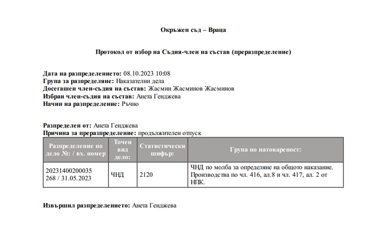
Разпределящият потребител избира бутон в долния десен ъгъл на екрана, за да подпише с КЕП генерирания протокол. След подписване на протокола той се визуализира в горния десен ъгъл.
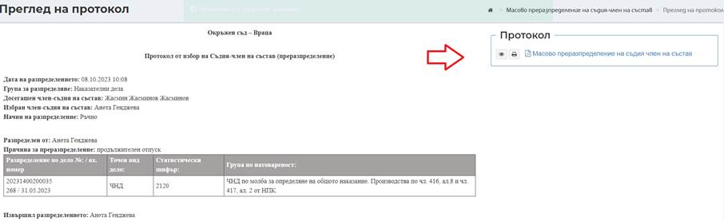
Причина за извеждане на досегашния съдия-член на състав е от тип Преразпределение.
В информация за преразпределение за предходния съдия-член на състав се извежда информация за тип – преразпределение и мотив – информация въведена при масовото преразпределение в поле „Основание“.
Протоколът от случайно разпределение се добавя в ел. папки на всички дела, за които е направено преразпределение.
Протоколът се публикува и в публичния портал за протоколи от случайно разпределение.